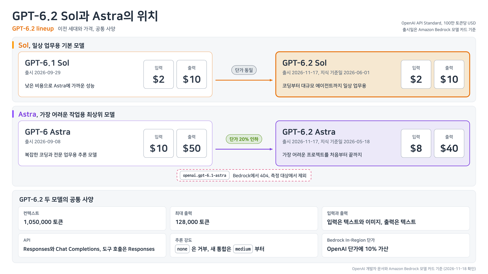
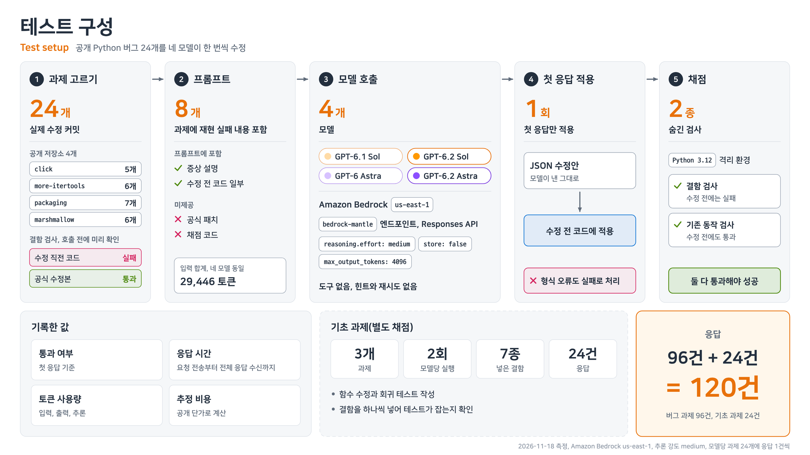
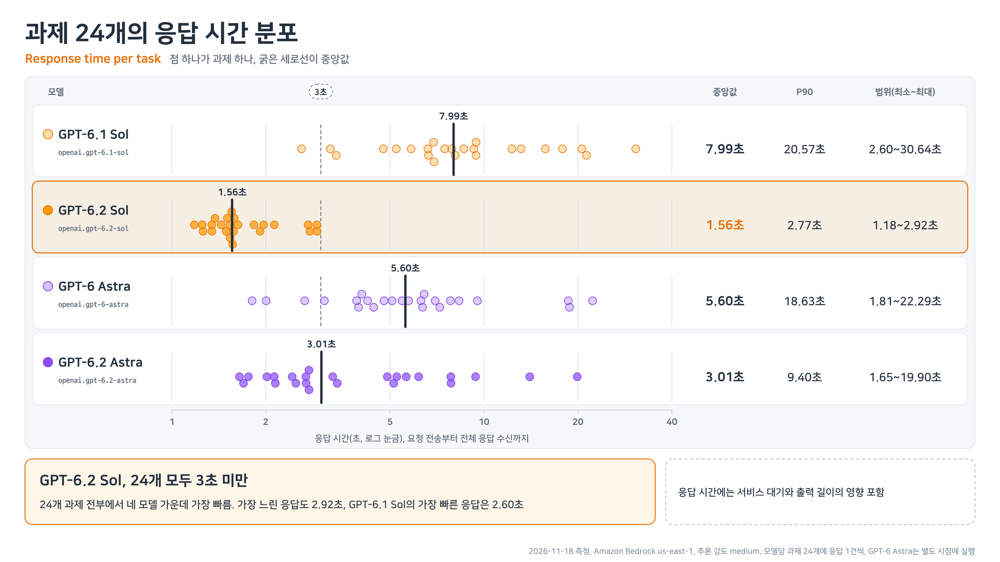
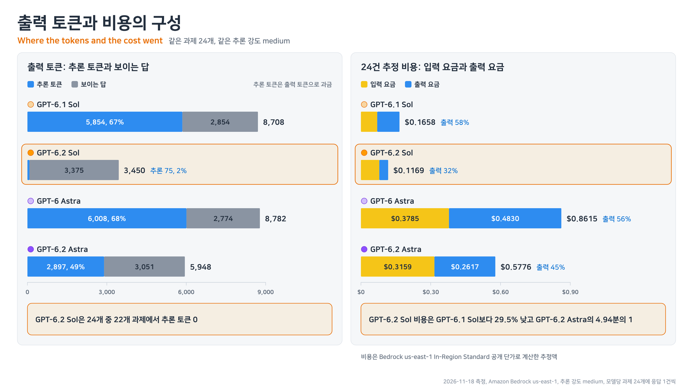
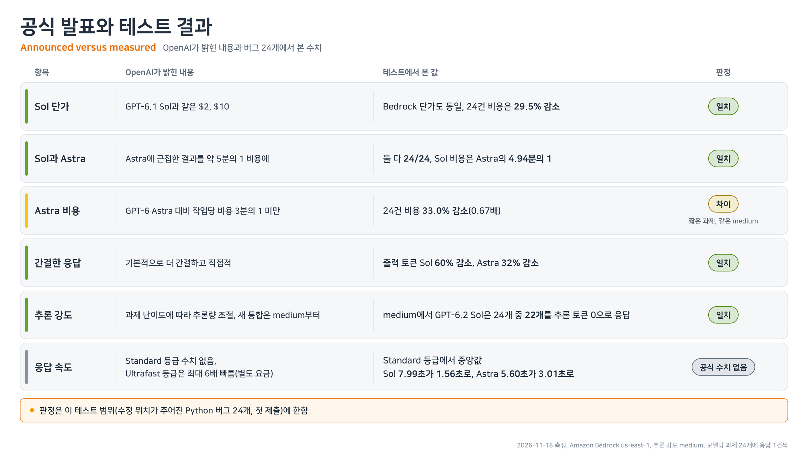
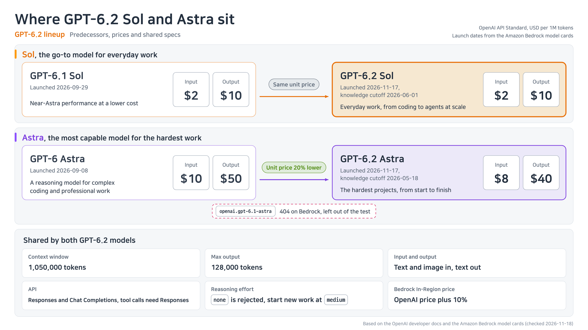
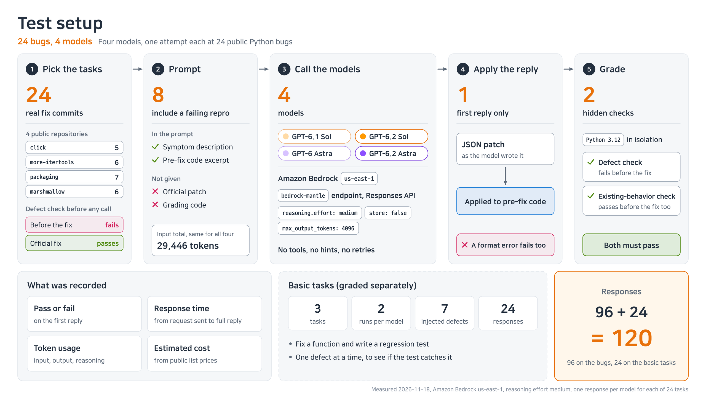
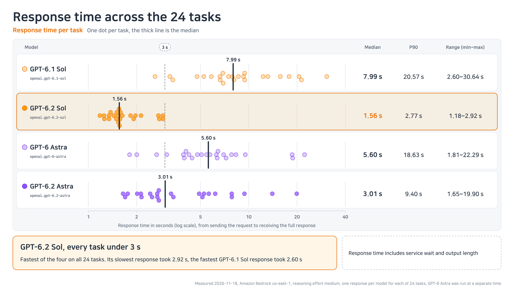
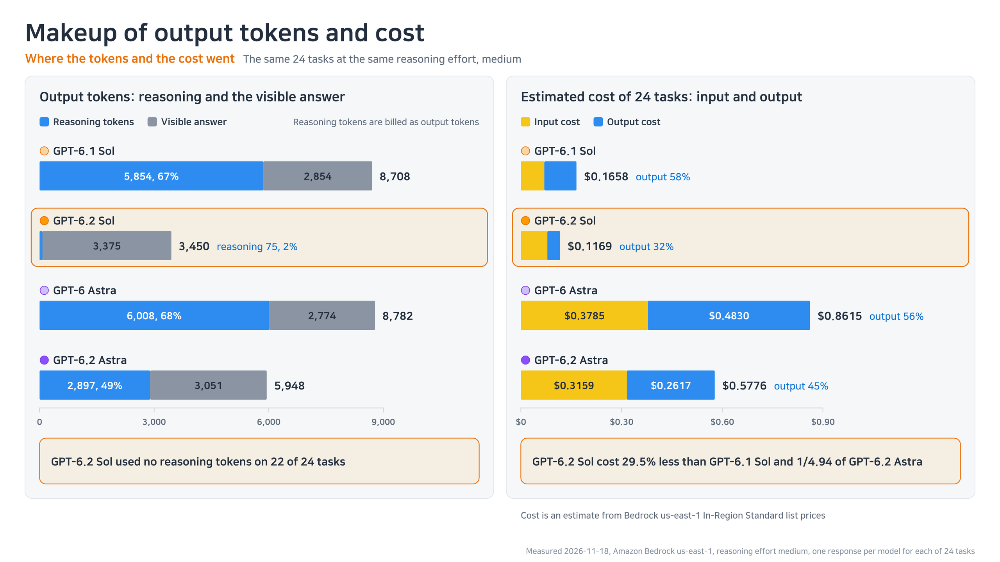
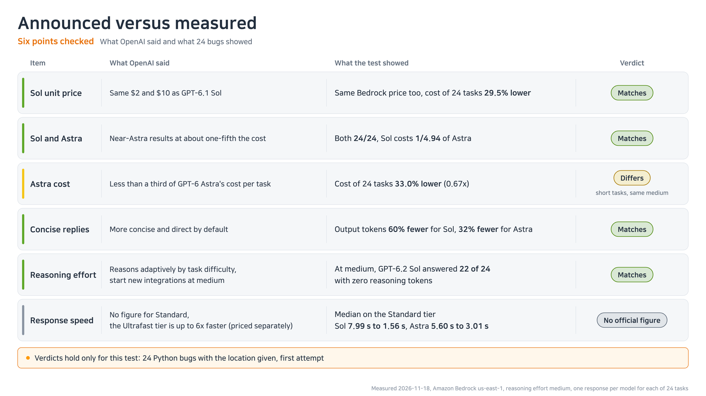

OpenAI가 2026년 11월 17일에 공개한 GPT-6.2 Sol과 Astra의 공식 소개 내용을 정리하고 Amazon Bedrock에서 공개 Python 버그 24개를 고치게 해 실제로 테스트해 보았습니다. 이전 세대를 포함한 네 모델 모두 24개를 첫 제출에서 고쳐 정확도로는 순위를 가릴 수 없었습니다. 차이는 속도와 토큰에서 나왔습니다. GPT-6.2 Sol은 응답 시간 중앙값 1.56초, 출력 토큰 3,450개, 추정 비용 0.1169 USD로 세 항목 모두 가장 낮았습니다. 같은 추론 강도에서 추론 토큰을 거의 사용하지 않은 것이 원인이었습니다.This post summarizes what OpenAI officially said about GPT-6.2 Sol and Astra, released on November 17, 2026, and reports a hands-on test in which the models fixed 24 public Python bugs on Amazon Bedrock. All four models, including the previous generation, fixed all 24 on the first attempt, so accuracy could not rank them. The differences were in speed and tokens. GPT-6.2 Sol was lowest on all three measures: a median response time of 1.56 seconds, 3,450 output tokens and an estimated cost of 0.1169 USD. The cause was that it used almost no reasoning tokens at the same reasoning effort.
OpenAI가 2026년 11월 17일에 GPT-6.2 Astra와 GPT-6.2 Sol을 공개했습니다. 다음 날 Amazon Bedrock에서 두 모델과 이전 세대인 GPT-6.1 Sol, GPT-6 Astra에 같은 Python 버그 24개를 고치게 했습니다. 네 모델 모두 24개를 첫 제출에서 고쳤습니다.
차이는 시간과 토큰에서 나왔습니다. GPT-6.2 Sol의 응답 시간 중앙값은 1.56초로, 같은 과제를 푼 GPT-6.1 Sol의 7.99초보다 80% 짧았습니다. 출력 토큰은 8,708개에서 3,450개로 줄었습니다. 두 모델의 단가가 같아서 24건의 추정 비용도 29.5% 낮아졌습니다.
이 글은 두 가지를 나란히 놓습니다. 하나는 OpenAI가 공식 문서와 공지에서 밝힌 GPT-6.2의 특징이고 다른 하나는 같은 조건에서 직접 테스트한 결과입니다. 공식 자료에는 기본 등급의 응답 속도를 수치로 밝힌 문장이 없습니다. 그래서 속도와 토큰 수는 테스트 결과로 확인했습니다.
테스트는 수정할 위치가 주어진 짧은 과제이고 과제마다 모델당 한 번씩 실행했습니다. 결과를 일반화할 때의 한계는 글 뒤쪽에 따로 정리했습니다.
01
GPT-6.2는 두 모델로 나왔습니다. OpenAI 개발자 커뮤니티 공지는 Astra를 가장 어려운 프로젝트를 위한 최상위 모델로, Sol을 일상 업무를 위한 효율적이고 다재다능한 모델로 소개합니다. 두 모델은 ChatGPT Work와 Codex, API에서 사용할 수 있습니다.
어느 모델이 어느 모델의 다음 세대인지는 Amazon Bedrock 모델 카드에 적혀 있습니다. GPT-6.2 Sol은 GPT-6.1 Sol의 다음 세대이고 GPT-6.2 Astra는 GPT-6 Astra의 다음 세대입니다. Bedrock에 openai.gpt-6.1-astra라는 모델 ID를 요청하면 404가 돌아옵니다. 그래서 이 글에서 Astra의 비교 대상은 GPT-6 Astra입니다.

Sol의 단가는 이전 세대와 같고 Astra의 단가는 입력과 출력 모두 20% 내렸습니다. 컨텍스트 크기와 최대 출력은 네 모델이 같습니다.
| 항목 | GPT-6.1 Sol | GPT-6.2 Sol | GPT-6 Astra | GPT-6.2 Astra |
|---|---|---|---|---|
| OpenAI의 한 줄 설명 | 낮은 비용으로 복잡한 작업에서 Astra에 가까운 성능 | 코딩부터 대규모 에이전트까지 일상 업무용 기본 모델 | 복잡한 코딩과 전문 업무를 위한 추론 모델 | 가장 어려운 프로젝트를 처음부터 끝까지 맡는 최상위 모델 |
| 입력 단가 | 2 | 2 | 10 | 8 |
| 캐시 읽기 단가 | 0.10 | 0.10 | 1 | 0.40 |
| 출력 단가 | 10 | 10 | 50 | 40 |
| 컨텍스트 | 1,050,000 | 1,050,000 | 1,050,000 | 1,050,000 |
| 최대 출력 토큰 | 128,000 | 128,000 | 128,000 | 128,000 |
| 지식 기준일 | 2026-04-30 | 2026-06-01 | 2026-04-30 | 2026-05-18 |
표 1. OpenAI 개발자 문서의 모델 페이지에 적힌 사양. 단가는 Standard 등급, 입력 272,000토큰 이하 요청의 100만 토큰당 USD (2026-11-18 확인)
공지, Changelog, 모델 페이지, 최신 모델 가이드에서 이 글의 테스트와 견줄 내용을 뽑으면 여섯 가지입니다.
medium으로 시작하라고 안내합니다. none이나 minimal을 사용하던 곳은 low로 바꾸라고 하고 모델 페이지에는 API가 none 요청을 거부한다고 적혀 있습니다.temperature와 top_p 같은 매개변수는 요청에서 빼야 합니다.응답 속도는 다르게 다룹니다. 공식 자료에 기본 등급의 속도를 이전 세대와 견준 수치는 없습니다. 속도 수치는 별도 요금의 Ultrafast 등급에만 있습니다. Bedrock 모델 카드는 OpenAI가 이 등급의 API 속도를 Standard보다 최대 6배 빠르다고 밝혔다고 적고 있고 요금은 2027년 2월 28일까지 Standard의 3배, 그 뒤에는 6배입니다.
두 모델은 출시일인 11월 17일부터 Amazon Bedrock에서 호출할 수 있습니다. 엔드포인트와 추론 옵션에 따라 모델 ID와 단가가 달라집니다. In-Region과 지역 교차 리전 추론(Geo CRIS)의 단가에는 OpenAI 단가의 10%가 더해져 있고 글로벌 교차 리전 추론(Global CRIS)은 OpenAI 단가와 같습니다.
| 추론 옵션 | 엔드포인트 | 모델 ID | Sol 입력, 출력 | Astra 입력, 출력 |
|---|---|---|---|---|
| In-Region (us-east-1) | bedrock-mantle | openai.gpt-6.2-solopenai.gpt-6.2-astra | 2.20, 11.00 | 8.80, 44.00 |
| Geo CRIS (미국) | bedrock-runtime | us.openai.gpt-6.2-solus.openai.gpt-6.2-astra | 2.20, 11.00 | 8.80, 44.00 |
| Global CRIS | bedrock-runtime | global.openai.gpt-6.2-solglobal.openai.gpt-6.2-astra | 2.00, 10.00 | 8.00, 40.00 |
표 2. Amazon Bedrock 모델 카드의 호출 경로와 Standard 등급 단가. 입력 272,000토큰 이하 요청의 100만 토큰당 USD (2026-11-18 확인)
서울 리전(ap-northeast-2)은 모델 카드에 bedrock-runtime의 Global CRIS만 지원하는 것으로 표시되어 있습니다. 서울에서 호출하려면 global.로 시작하는 추론 프로파일 ID를 사용합니다. 이 글의 테스트는 In-Region 호출이 가능한 us-east-1에서 진행했습니다.
02
테스트는 두 가지입니다. 중심은 공개 저장소의 실제 버그 24개를 고치는 과제이고 함수 수정과 테스트 작성을 함께 맡기는 기초 과제 3개를 따로 채점했습니다. 네 모델에 같은 프롬프트를 같은 설정으로 보냈습니다.

| 항목 | 값 |
|---|---|
| 실행일 | 2026-11-18 (UTC) |
| 호출 경로 | Amazon Bedrock us-east-1, bedrock-mantle 엔드포인트, Responses API |
| 요청 설정 | reasoning.effort: medium, max_output_tokens: 4096, store: false, 기본 서비스 등급 |
| 도구와 대화 이력 | 없음. 과제마다 새 요청 한 번, 힌트와 재시도 없음 |
| 공개 버그 과제 | click 5개, more-itertools 6개, packaging 7개, marshmallow 6개 |
| 공개 버그 채점 | Python 3.12 격리 환경에서 숨긴 검사 두 가지(결함 검사, 기존 동작 검사)를 모두 통과해야 성공 |
| 기초 과제 | 주문 목록 페이지네이션, 계정 이벤트 재처리, 빌드 순서 계산을 모델당 2회씩 |
| 응답 수 | 공개 버그 96건(24개 x 4개 모델), 기초 과제 24건(3개 x 2회 x 4개 모델) |
표 3. 테스트 조건
과제는 click, more-itertools, packaging, marshmallow의 공개 Git 이력에서 동작이 달라진 수정 24개를 골랐습니다. 모델을 호출하기 전에 수정 직전 코드는 결함 검사에 실패하고 공식 수정본은 두 검사를 모두 통과하는 것을 실행으로 확인했습니다.
모델에는 영어로 바꿔 쓴 증상 설명과 수정 전 코드의 일부를 주었습니다. 8개 과제에는 재현에서 나온 실패 내용도 넣었습니다. 공식 패치와 채점 코드는 보내지 않았습니다. 모델은 수정안을 JSON으로 내고 첫 응답을 그대로 적용해 채점했습니다. 출력 형식이 틀려 적용할 수 없는 응답도 실패로 처리하는 규칙이었습니다.
추론 강도를 medium으로 고른 이유는 OpenAI 가이드가 새 연동의 시작값으로 권하기 때문입니다. 네 모델 모두 같은 값을 사용했습니다.
기초 과제는 버그가 있는 함수와 요구 사항을 주고 수정한 함수와 회귀 테스트를 함께 작성하게 합니다. 채점은 두 방향입니다. 수정한 함수는 과제마다 기능 검사 8묶음으로 확인했습니다. 모델이 작성한 테스트는 미리 준비한 결함 7종을 하나씩 넣었을 때 실패하는지 확인했습니다. 요구 사항에는 결함을 AssertionError로 알리라는 조건이 있어서 예외 유형을 지켰는지도 따로 셌습니다.
응답 시간은 요청을 보낸 순간부터 전체 응답을 받은 순간까지입니다. 서비스 대기 시간과 출력 길이의 영향이 들어 있습니다. GPT-6.1 Sol, GPT-6.2 Sol, GPT-6.2 Astra는 같은 시간대에 최대 여섯 요청을 동시에 보냈고 GPT-6 Astra는 그 뒤에 따로 실행했습니다.
비용은 응답에 기록된 토큰 사용량에 표 2의 In-Region 단가를 곱한 추정액입니다. 입력은 일반 입력, 캐시 쓰기, 캐시 읽기로 나눠 각각의 단가를 적용했습니다. 실제 청구서와 대조하지는 않았습니다.
03
정확도로는 네 모델의 순위를 정할 수 없었습니다. 공개 버그 24개에서 네 모델 모두 결함 검사와 기존 동작 검사를 전부 통과했습니다. 기초 과제의 기능 검사도 네 모델 모두 48묶음을 통과했습니다.
| 모델 | 공개 버그 첫 제출 통과 | 기초 과제 기능 검사 | 테스트의 결함 감지 | 지정한 예외로 보고 |
|---|---|---|---|---|
| GPT-6.1 Sol | 24/24 | 48/48 | 42/42 | 42/42 |
| GPT-6.2 Sol | 24/24 | 48/48 | 42/42 | 36/42 |
| GPT-6 Astra | 24/24 | 48/48 | 42/42 | 42/42 |
| GPT-6.2 Astra | 24/24 | 48/48 | 42/42 | 42/42 |
표 4. 정확도 결과. 결함 감지 42건은 결함 21종을 두 번씩 넣은 횟수
통과 여부가 갈린 과제가 하나도 없다는 것은 네 모델의 성능이 같다는 증거가 아닙니다. 이 과제들이 네 모델에게 모두 쉬웠다는 뜻에 가깝습니다. more-itertools의 여섯 과제는 프로젝트의 공식 테스트로도 교차 확인했고 네 모델 모두 통과했습니다.
유일한 차이는 기초 과제의 마지막 열입니다. GPT-6.2 Sol이 작성한 테스트는 넣은 결함 42건을 모두 잡았습니다. 다만 그중 6건은 요구한 AssertionError가 아닌 다른 예외로 실패했습니다. 이 차이는 뒤의 주의할 점에서 다시 다룹니다.
04
정답 수가 같으므로 모델을 가르는 것은 정답 하나에 드는 시간, 토큰, 비용입니다. 세 항목 모두 GPT-6.2 Sol이 가장 낮았습니다.
| 모델 | 응답 시간 중앙값 | 응답 시간 P90 | 출력 토큰 합계 | 24건 추정 비용 (USD) | 해결 1건당 비용 (USD) |
|---|---|---|---|---|---|
| GPT-6.1 Sol | 7.99초 | 20.57초 | 8,708 | 0.1658 | 0.00691 |
| GPT-6.2 Sol | 1.56초 | 2.77초 | 3,450 | 0.1169 | 0.00487 |
| GPT-6 Astra | 5.60초 | 18.63초 | 8,782 | 0.8615 | 0.03590 |
| GPT-6.2 Astra | 3.01초 | 9.40초 | 5,948 | 0.5776 | 0.02407 |
표 5. 공개 버그 24개의 응답 시간, 출력 토큰, 추정 비용. 입력은 네 모델 모두 29,446토큰. P90은 24개를 짧은 순서로 놓았을 때 22번째 값
GPT-6.2 Sol의 응답 시간 중앙값은 GPT-6.1 Sol보다 80.5% 짧았습니다. 배수로는 5.1배 빠른 셈입니다. 느린 쪽 응답을 보는 P90은 20.57초에서 2.77초로 86.6% 줄었습니다.

분포를 보면 중앙값보다 폭의 차이가 더 큽니다. GPT-6.2 Sol의 응답은 가장 빠른 것이 1.18초, 가장 느린 것이 2.92초로 24개 모두 3초 안에 끝났습니다. GPT-6.1 Sol은 2.60초에서 30.64초까지 퍼져 있습니다. GPT-6.2 Sol의 가장 느린 응답이 GPT-6.1 Sol의 가장 빠른 응답과 비슷한 수준입니다.
과제별로 보아도 결과가 같습니다. 24개 과제 전부에서 GPT-6.2 Sol이 네 모델 가운데 가장 먼저 응답을 끝냈습니다. 24건의 응답 시간을 더하면 GPT-6.1 Sol은 243.9초, GPT-6.2 Sol은 42.4초입니다.
GPT-6.2 Sol의 출력 토큰은 3,450개로 GPT-6.1 Sol의 8,708개보다 60.4% 적었습니다. 네 모델 가운데 가장 적은 값입니다. 같은 문제를 같은 형식으로 답했는데 토큰 수가 이만큼 다른 이유는 다음 절에서 추론 토큰으로 설명합니다.
Sol 두 모델의 단가는 같습니다. 그래서 줄어든 출력 토큰이 그대로 비용 차이가 됩니다. 24건의 추정 비용은 0.1658 USD에서 0.1169 USD로 29.5% 낮아졌고 해결 1건당 비용은 0.00487 USD입니다.
Astra와 견주면 차이가 더 큽니다. GPT-6.2 Astra는 같은 24개를 고치는 데 0.5776 USD가 들어 GPT-6.2 Sol의 4.94배였습니다. 응답 시간 중앙값도 3.01초로 Sol의 1.9배입니다. 이 과제에서는 더 비싼 모델을 써서 얻은 정답 수의 이득이 없었습니다.
Astra끼리 견주면 GPT-6.2 Astra도 이전 세대보다 나아졌습니다. 24건의 추정 비용이 GPT-6 Astra보다 33.0% 낮았고 응답 시간 중앙값은 5.60초에서 3.01초로 줄었습니다. 24개 과제 가운데 20개에서 GPT-6.2 Astra가 더 빨랐습니다.
함수와 테스트를 함께 작성하는 기초 과제에서도 순서는 같았습니다. GPT-6.2 Sol의 응답 시간 중앙값은 3.57초로 GPT-6.1 Sol의 22.63초보다 84% 짧았고 출력 토큰은 47% 적었습니다.
| 모델 | 응답 시간 중앙값 | 출력 토큰 합계 | 6건 추정 비용 (USD) | 지정한 예외로 보고 |
|---|---|---|---|---|
| GPT-6.1 Sol | 22.63초 | 4,712 | 0.0567 | 42/42 |
| GPT-6.2 Sol | 3.57초 | 2,498 | 0.0323 | 36/42 |
| GPT-6 Astra | 10.67초 | 4,725 | 0.2841 | 42/42 |
| GPT-6.2 Astra | 4.43초 | 2,729 | 0.1395 | 42/42 |
표 6. 기초 과제 3개를 모델당 2회 실행한 결과. 입력은 네 모델 모두 2,202토큰
05
출력 토큰이 줄어든 원인은 추론 토큰입니다. 추론 토큰은 모델이 답을 내기 전에 생각하는 데 사용하는 토큰입니다. 응답에는 보이지 않지만 출력 토큰에 포함되어 과금되고 만드는 데 시간이 듭니다. 사용량은 응답의 usage.output_tokens_details.reasoning_tokens에 기록됩니다.
| 모델 | 출력 토큰 | 추론 토큰 | 보이는 답 | 추론 비중 | 추론 토큰이 0인 과제 |
|---|---|---|---|---|---|
| GPT-6.1 Sol | 8,708 | 5,854 | 2,854 | 67% | 2/24 |
| GPT-6.2 Sol | 3,450 | 75 | 3,375 | 2% | 22/24 |
| GPT-6 Astra | 8,782 | 6,008 | 2,774 | 68% | 1/24 |
| GPT-6.2 Astra | 5,948 | 2,897 | 3,051 | 49% | 8/24 |
표 7. 공개 버그 24개의 출력 토큰 구성. 보이는 답은 출력 토큰에서 추론 토큰을 뺀 값
네 모델 모두 추론 강도는 medium이었습니다. 같은 설정에서 GPT-6.1 Sol은 출력의 67%를 추론에 사용했고 GPT-6.2 Sol은 24개 가운데 22개 과제에서 추론 토큰을 하나도 사용하지 않았습니다. 보이는 답의 길이는 2,854토큰과 3,375토큰으로 비슷합니다. 달라진 것은 답이 아니라 답 앞의 생각입니다.
시험에 비유하면 이해하기 쉽습니다. 채점은 답안지만 보지만 시험 시간과 종이값은 연습장까지 포함해서 나갑니다. GPT-6.1 Sol과 GPT-6 Astra는 문제마다 연습장에 풀이를 길게 적은 뒤 답을 옮겼습니다. GPT-6.2 Sol은 대부분의 문제에서 연습장 없이 답안지에 바로 답을 적었고 GPT-6.2 Astra는 연습장 분량을 절반으로 줄였습니다. 네 학생의 점수는 같았습니다.
비유와 다른 점이 하나 있습니다. 연습장에 얼마나 적을지는 수험생이 정하지만 모델의 추론량은 요청의 추론 강도와 모델의 판단이 함께 정합니다. OpenAI 추론 가이드가 말하는 대로 모델이 과제 난이도에 맞춰 추론량을 조절한 결과로 보입니다.

Sol의 속도 차이는 토큰 수만으로는 설명되지 않습니다. 24건의 응답 시간 합계는 5.75배 차이인데 출력 토큰은 2.52배 차이입니다. 나머지 2.28배는 걸린 시간 1초당 나온 출력 토큰 수의 차이입니다. GPT-6.1 Sol은 초당 35.7토큰, GPT-6.2 Sol은 초당 81.4토큰이었습니다.
Astra는 양상이 다릅니다. 초당 출력 토큰 수는 GPT-6 Astra가 51.7개, GPT-6.2 Astra가 49.6개로 거의 같습니다. Astra가 빨라진 것은 토큰을 32% 적게 만든 결과입니다. 초당 토큰 수는 대기 시간까지 포함한 전체 응답 시간으로 나눈 값이어서 순수한 생성 속도와는 다릅니다.
가장 차이가 컸던 과제는 packaging의 요구 사항 파싱 버그입니다. GPT-6.1 Sol은 추론 토큰 1,144개를 사용하고 30.64초 만에 답했습니다. GPT-6.2 Sol은 추론 토큰 32개를 사용하고 1.63초 만에 답했습니다. 두 답 모두 검사를 통과했습니다.
출력 토큰은 60% 줄었는데 비용은 29.5% 줄었습니다. 입력 요금이 줄지 않았기 때문입니다. GPT-6.2 Sol의 24건 비용 0.1169 USD 가운데 입력이 0.0790 USD, 출력이 0.0379 USD입니다. 비용에서 출력이 차지하는 비중은 GPT-6.1 Sol의 57.8%에서 32.5%로 내려갔습니다.
입력 요금에는 캐시 쓰기가 들어 있습니다. GPT-6.2 Sol 입력의 87.6%가 캐시 쓰기로 집계되어 일반 입력의 1.25배 단가가 적용됐습니다. 과제마다 프롬프트가 달라서 다시 읽힌 캐시는 없었습니다. Bedrock 프롬프트 캐싱 문서에 따르면 기본 모드는 마지막 메시지에 자동으로 캐시 지점을 두기 때문입니다. 이렇게 더 낸 금액은 0.0142 USD로 24건 비용의 12%입니다.
답의 형식에 따라 달랐습니다. JSON 수정안만 내는 공개 버그 과제에서는 보이는 답의 길이가 줄지 않았습니다. 코드와 테스트를 자유롭게 작성하는 기초 과제에서는 보이는 답이 GPT-6.2 Sol에서 42%, GPT-6.2 Astra에서 43% 짧아졌습니다. 가이드가 말한 더 간결한 응답은 자유 형식의 답에서 드러났습니다.
06
공식 자료의 내용 여섯 가지를 테스트 결과와 하나씩 견주었습니다. 네 가지는 테스트 결과와 맞았고 한 가지는 수치가 달랐고 한 가지는 견줄 공식 수치가 없었습니다.

Sol의 단가는 그대로였고 실제 비용은 내려갔습니다. OpenAI 모델 페이지의 단가도, Bedrock 모델 카드의 단가도 GPT-6.1 Sol과 같습니다. 같은 단가에서 토큰 사용량이 줄어 24건 비용이 29.5% 낮아졌습니다.
Sol이 Astra의 약 5분의 1 비용이라는 설명은 이 테스트에서도 맞았습니다. 두 모델 모두 24개를 고쳤고 Sol의 비용은 Astra의 4.94분의 1이었습니다. OpenAI가 인용한 평가와 과제는 다르지만 비율이 같은 수준으로 나왔습니다.
응답이 더 간결하다는 설명도 맞았습니다. 출력 토큰은 Sol에서 60%, Astra에서 32% 줄었습니다. 가이드는 글의 길이를 말하고 있고 이 테스트에서는 줄어든 양의 대부분이 추론 토큰이었다는 점이 다릅니다.
과제에 맞춰 추론량을 조절한다는 설명과 측정값이 같은 방향입니다. 가이드가 권한 medium에서 GPT-6.2 Sol은 24개 가운데 22개 과제를 추론 토큰 없이 답했고 모두 정답이었습니다.
공지는 GPT-6.2 Astra의 작업당 비용이 GPT-6 Astra의 3분의 1 미만이라고 소개합니다. 이 테스트에서는 24건 비용이 33.0% 낮아지는 데 그쳤습니다. 이전 세대의 0.67배입니다.
조건이 다르다는 점을 함께 보아야 합니다. 공지의 Agents' Last Exam 수치는 GPT-6.2 Astra를 xhigh로, GPT-6 Astra를 max로 설정한 결과입니다. 이 테스트는 한 번의 요청으로 끝나는 짧은 과제이고 두 모델 모두 medium이었습니다. 짧은 과제에서는 입력 요금이 비용의 절반 안팎이어서 출력 토큰이 줄어도 전체 비용이 그만큼 줄지 않습니다.
기본 등급의 응답 속도는 공식 자료에 수치가 없습니다. 테스트에서는 Standard 등급에서 Sol의 응답 시간 중앙값이 7.99초에서 1.56초로, Astra가 5.60초에서 3.01초로 줄었습니다. 별도 요금인 Ultrafast 등급은 시험하지 않았습니다.
07
이번 세대에서 달라진 것은 정답률보다 정답 하나에 드는 토큰과 시간입니다. 네 모델이 모두 통과하는 과제에서는 모델을 고르는 기준이 정확도에서 속도와 비용으로 옮겨 갑니다.
medium이라는 값은 같아도 모델 세대마다 실제 추론량이 다릅니다. GPT-6.1 Sol에서 medium으로 운영하던 작업을 GPT-6.2 Sol로 옮기면 모델이 추론 없이 바로 답하는 경우가 생깁니다. 대부분의 작업에서는 속도와 비용의 이득입니다. 세부 규칙까지 지켜야 하는 작업이라면 옮긴 뒤에 결과를 다시 확인하는 것을 권고합니다.
GPT-6.2 Sol에서는 비용의 3분의 2가 입력 요금이었습니다. 출력을 줄이는 방법보다 입력을 다루는 방법이 비용에 더 크게 작용합니다. 반복되는 지시문과 문서는 캐시에서 읽히도록 프롬프트 앞쪽에 고정합니다. 이번 테스트처럼 요청마다 프롬프트가 다르면 캐시 쓰기 요금만 내게 됩니다. 이런 경우에는 prompt_cache_options.mode를 explicit으로 두어 자동 캐시 지점을 끄는 방법이 문서에 안내되어 있습니다.
OpenAI는 Sol을 일상 업무의 기본 모델로, Astra를 가장 어려운 작업용으로 소개합니다. 이 테스트의 결과도 같은 방향입니다. 범위가 정해진 수정에서는 Astra가 정답 수를 늘리지 못했고 비용은 4.94배였습니다. Sol로 시작하고 Sol이 실패하는 작업이 확인되면 그 작업을 Astra로 보내는 순서가 비용에 맞습니다.
GPT-6.2 Sol은 24개 응답이 모두 1.18초에서 2.92초 사이였습니다. 가장 느린 응답이 가장 빠른 응답의 2.5배입니다. GPT-6.1 Sol은 이 비율이 11.8배였습니다. 응답 시간이 고르면 대화형 도구의 대기 시간을 예상하기 쉽고 호출을 여러 번 이어 붙이는 에이전트의 전체 시간과 타임아웃을 정하기도 쉽습니다.
08
기초 과제에서 GPT-6.2 Sol이 작성한 테스트는 결함 42건을 모두 잡았습니다. 그중 6건은 요구한 AssertionError가 아닌 예외로 실패했습니다. 6건은 모두 빌드 순서 계산 과제에서 나왔고 결함 세 종류에서 두 번의 실행 모두 같은 결과였습니다.
예를 들어 작업 2,500개가 이어진 입력에서 RecursionError를 내는 결함을 넣으면 네 모델의 테스트가 모두 실패합니다. 다른 세 모델의 테스트는 그 예외를 받아 AssertionError로 바꿔 알렸고 GPT-6.2 Sol의 테스트는 RecursionError를 그대로 내보냈습니다. 결함을 놓친 것이 아니라 알리는 방식이 요구 사항과 달랐습니다.
예외 유형까지 다른 도구가 읽는 환경이라면 이 차이가 문제가 됩니다. 이 과제에서 지정한 예외를 모두 지킨 모델 가운데 GPT-6.2 Astra가 4.43초로 가장 빨랐고 GPT-6.1 Sol이 0.0567 USD로 가장 저렴했습니다. GPT-6.2 Sol의 추론 강도를 올리면 달라지는지는 시험하지 않았습니다.
medium 한 가지, 서비스 등급은 Standard 한 가지입니다.09
이 테스트의 범위 안에서 정리한 기준입니다. 표의 근거는 모두 이 글의 측정값이고 마지막 열은 자기 환경에서 확인할 항목입니다.
| 상황 | 먼저 써 볼 모델 | 이 테스트의 근거 | 옮기기 전에 확인할 것 |
|---|---|---|---|
| 수정 범위가 정해진 코드 수정, 대기 시간이 중요한 대화형 도구 | GPT-6.2 Sol | 24/24 통과, 응답 시간 중앙값 1.56초, 모든 응답 3초 미만 | 자기 코드베이스의 과제에서 통과율이 유지되는지 |
| 같은 종류의 요청을 대량으로 반복하는 작업 | GPT-6.2 Sol | 해결 1건당 0.00487 USD, GPT-6.2 Astra의 약 5분의 1 | 프롬프트 앞부분이 반복되는지, 캐시가 읽히는지 |
| GPT-6.1 Sol로 운영 중인 작업 | GPT-6.2 Sol | 단가 동일, 24건 비용 29.5% 감소, 응답 시간 중앙값 80% 단축 | 세부 출력 규칙을 지키는지, 제거해야 하는 요청 매개변수 |
| 예외 유형 같은 세부 규칙까지 지켜야 하는 테스트 작성 | GPT-6.2 Astra | 지정한 예외 42/42, 응답 시간 중앙값 4.43초 | GPT-6.2 Sol의 추론 강도를 올렸을 때의 결과 |
| GPT-6 Astra로 운영 중인 작업 | GPT-6.2 Astra | 단가 20% 인하, 24건 비용 33.0% 감소, 24개 중 20개 과제에서 더 빠름 | 긴 작업에서 비용이 어떻게 달라지는지 |
| 여러 단계에 걸친 복잡한 작업 | 이 테스트로는 정할 수 없음 | 측정하지 않음 | OpenAI는 Astra를 권함. 자기 과제로 두 모델을 비교 |
표 8. 상황별로 먼저 써 볼 모델. 근거는 2026-11-18 us-east-1에서 추론 강도 medium으로 얻은 값
수치는 조건에 따라 달라집니다. 추론 강도를 올리면 추론 토큰과 응답 시간이 늘어납니다. 과제가 길어지면 입력과 출력의 비중이 바뀝니다. 리전과 추론 옵션에 따라 단가와 지연 시간이 달라집니다.
자기 팀의 기준을 만들 때는 세 가지를 함께 기록하는 것을 권고합니다.
reasoning_tokens와 cache_write_tokens. 두 값이 속도와 비용의 차이를 설명합니다OpenAI released GPT-6.2 Astra and GPT-6.2 Sol on November 17, 2026. The next day I had those two models and their predecessors, GPT-6.1 Sol and GPT-6 Astra, fix the same 24 Python bugs on Amazon Bedrock. All four models fixed all 24 on the first attempt.
The differences were in time and tokens. The median response time of GPT-6.2 Sol was 1.56 seconds, 80% shorter than the 7.99 seconds GPT-6.1 Sol took on the same tasks. Output tokens fell from 8,708 to 3,450. The two models have the same unit price, so the estimated cost of the 24 tasks was 29.5% lower as well.
This post puts two things side by side. One is what OpenAI says about GPT-6.2 in its official docs and announcement, and the other is what a hands-on test under the same conditions showed. The official material gives no figure for response speed on the default tier. So speed and token counts come from the test.
The tasks are short, the location of the fix is given, and each task was run once per model. The limits on generalizing the results are collected in a later section.
01
GPT-6.2 comes as two models. The announcement on the OpenAI Developer Community introduces Astra as the most capable model for the hardest projects and Sol as an efficient and versatile model for everyday work. Both are available in ChatGPT Work, Codex and the API.
The Amazon Bedrock model cards say which model succeeds which. GPT-6.2 Sol is the next generation of GPT-6.1 Sol and GPT-6.2 Astra is the next generation of GPT-6 Astra. A request to Bedrock for the model ID openai.gpt-6.1-astra returns 404. So in this post Astra is compared with GPT-6 Astra.

The unit price of Sol is the same as its predecessor and the unit price of Astra is 20% lower for both input and output. The context size and the maximum output are the same for all four models.
| Item | GPT-6.1 Sol | GPT-6.2 Sol | GPT-6 Astra | GPT-6.2 Astra |
|---|---|---|---|---|
| OpenAI's one-line description | Near-Astra performance for complex work at a lower cost | The go-to model for everyday work, from coding to powering agents at scale | A reasoning model for complex coding and professional work | The most capable model for the hardest projects, from start to finish |
| Input price | 2 | 2 | 10 | 8 |
| Cache read price | 0.10 | 0.10 | 1 | 0.40 |
| Output price | 10 | 10 | 50 | 40 |
| Context | 1,050,000 | 1,050,000 | 1,050,000 | 1,050,000 |
| Max output tokens | 128,000 | 128,000 | 128,000 | 128,000 |
| Knowledge cutoff | 2026-04-30 | 2026-06-01 | 2026-04-30 | 2026-05-18 |
Table 1. Specs from the model pages of the OpenAI developer docs. Prices are USD per 1 million tokens on the Standard tier for requests with 272,000 input tokens or fewer (checked 2026-11-18)
From the announcement, the changelog, the model pages and the latest model guide, six points can be set against the test in this post.
medium for a new integration. Where none or minimal is in use it says to use low, and the model pages say the API rejects requests that set none.temperature and top_p have to be removed from requests.Response speed is treated differently. The official material has no figure comparing default-tier speed with the previous generation. A speed figure exists only for the separately priced Ultrafast tier. The Bedrock model card says OpenAI reports API speeds up to six times faster than Standard for that tier, and it costs three times the Standard rate through February 28, 2027 and six times after that.
Both models have been callable on Amazon Bedrock since the launch day, November 17. The model ID and the price depend on the endpoint and the inference option. The In-Region and geographic cross-Region inference (Geo CRIS) prices include a 10% fee over OpenAI rates, and global cross-Region inference (Global CRIS) matches OpenAI rates.
| Inference option | Endpoint | Model ID | Sol input, output | Astra input, output |
|---|---|---|---|---|
| In-Region (us-east-1) | bedrock-mantle | openai.gpt-6.2-solopenai.gpt-6.2-astra | 2.20, 11.00 | 8.80, 44.00 |
| Geo CRIS (US) | bedrock-runtime | us.openai.gpt-6.2-solus.openai.gpt-6.2-astra | 2.20, 11.00 | 8.80, 44.00 |
| Global CRIS | bedrock-runtime | global.openai.gpt-6.2-solglobal.openai.gpt-6.2-astra | 2.00, 10.00 | 8.00, 40.00 |
Table 2. Call paths and Standard tier prices from the Amazon Bedrock model cards. USD per 1 million tokens for requests with 272,000 input tokens or fewer (checked 2026-11-18)
The model cards list the Seoul Region (ap-northeast-2) as supporting only Global CRIS on bedrock-runtime. To call from Seoul, use the inference profile ID that starts with global.. The test in this post ran in us-east-1, where In-Region calls are possible.
02
There are two tests. The main one fixes 24 real bugs from public repositories, and three basic tasks that ask for a function fix together with tests were graded separately. The four models received the same prompts with the same settings.

| Item | Value |
|---|---|
| Run date | 2026-11-18 (UTC) |
| Call path | Amazon Bedrock us-east-1, bedrock-mantle endpoint, Responses API |
| Request settings | reasoning.effort: medium, max_output_tokens: 4096, store: false, default service tier |
| Tools and history | None. One new request per task, no hints and no retries |
| Public bug tasks | click 5, more-itertools 6, packaging 7, marshmallow 6 |
| Grading of public bugs | Two hidden checks (defect check, existing-behavior check) in an isolated Python 3.12 environment, both must pass |
| Basic tasks | Order list pagination, account event replay and build order calculation, twice per model |
| Responses | 96 for the public bugs (24 x 4 models), 24 for the basic tasks (3 x 2 runs x 4 models) |
Table 3. Test conditions
The tasks are 24 behavior-changing fixes picked from the public Git history of click, more-itertools, packaging and marshmallow. Before any model was called, a run confirmed that the code just before each fix fails the defect check and that the official fix passes both checks.
Each model received a description of the symptom, rewritten in English, and part of the code before the fix. Eight tasks also included the failure output from the reproduction. The official patch and the grading code were not sent. The model returned its fix as JSON, and the first response was applied as it was and graded. A response whose format could not be applied would have counted as a failure.
The reasoning effort was set to medium because the OpenAI guide recommends it as the starting value for a new integration. All four models used the same value.
A basic task gives a function with a bug and its requirements and asks for the fixed function and a regression test together. Grading goes two ways. The fixed function was checked with eight groups of functional checks per task. The test the model wrote was checked by injecting seven prepared defects one at a time and seeing whether it fails. The requirements say a defect must be reported with AssertionError, so compliance with the exception type was counted separately.
Response time runs from sending the request to receiving the full response. It includes service wait time and the effect of output length. GPT-6.1 Sol, GPT-6.2 Sol and GPT-6.2 Astra were called in the same time window with up to six concurrent requests, and GPT-6 Astra was run separately afterwards.
Cost is an estimate: the token usage recorded in each response multiplied by the In-Region prices in Table 2. Input was split into regular input, cache writes and cache reads, each at its own price. It was not checked against an actual invoice.
03
Accuracy could not rank the four models. On the 24 public bugs all four passed every defect check and every existing-behavior check. On the basic tasks all four passed all 48 groups of functional checks.
| Model | Public bugs passed on first attempt | Basic task functional checks | Defects caught by its tests | Reported with the requested exception |
|---|---|---|---|---|
| GPT-6.1 Sol | 24/24 | 48/48 | 42/42 | 42/42 |
| GPT-6.2 Sol | 24/24 | 48/48 | 42/42 | 36/42 |
| GPT-6 Astra | 24/24 | 48/48 | 42/42 | 42/42 |
| GPT-6.2 Astra | 24/24 | 48/48 | 42/42 | 42/42 |
Table 4. Accuracy results. The 42 defect checks are 21 kinds of defect injected twice each
That no task split the models is not evidence that the four models perform the same. It is closer to saying these tasks were easy for all four. The six more-itertools tasks were also cross-checked with the project's own tests, and all four models passed.
The only difference is the last column of the basic tasks. The tests GPT-6.2 Sol wrote caught all 42 injected defects. Six of them, however, failed with an exception other than the requested AssertionError. The caveats section below returns to this.
04
With the same number of correct answers, what separates the models is the time, tokens and cost one correct answer takes. GPT-6.2 Sol was lowest on all three.
| Model | Median response time | P90 response time | Total output tokens | Estimated cost of 24 tasks (USD) | Cost per solved task (USD) |
|---|---|---|---|---|---|
| GPT-6.1 Sol | 7.99 s | 20.57 s | 8,708 | 0.1658 | 0.00691 |
| GPT-6.2 Sol | 1.56 s | 2.77 s | 3,450 | 0.1169 | 0.00487 |
| GPT-6 Astra | 5.60 s | 18.63 s | 8,782 | 0.8615 | 0.03590 |
| GPT-6.2 Astra | 3.01 s | 9.40 s | 5,948 | 0.5776 | 0.02407 |
Table 5. Response time, output tokens and estimated cost on the 24 public bugs. Input was 29,446 tokens for every model. P90 is the 22nd of the 24 values sorted from shortest
The median response time of GPT-6.2 Sol was 80.5% shorter than that of GPT-6.1 Sol. As a ratio it is 5.1 times faster. P90, which looks at the slow responses, fell 86.6%, from 20.57 to 2.77 seconds.

In the distribution the difference in spread is larger than the difference in the median. The responses of GPT-6.2 Sol ranged from 1.18 seconds for the fastest to 2.92 seconds for the slowest, so all 24 finished within 3 seconds. GPT-6.1 Sol spreads from 2.60 to 30.64 seconds. The slowest response of GPT-6.2 Sol is about level with the fastest response of GPT-6.1 Sol.
Task by task the result is the same. On all 24 tasks GPT-6.2 Sol finished its response first among the four models. Adding up the 24 response times gives 243.9 seconds for GPT-6.1 Sol and 42.4 seconds for GPT-6.2 Sol.
GPT-6.2 Sol produced 3,450 output tokens, 60.4% fewer than the 8,708 of GPT-6.1 Sol. It is the lowest of the four models. The next section explains with reasoning tokens why the count differs this much for the same problems answered in the same format.
The two Sol models have the same unit price. So the drop in output tokens turns directly into a cost difference. The estimated cost of the 24 tasks fell 29.5%, from 0.1658 USD to 0.1169 USD, and the cost per solved task is 0.00487 USD.
Against Astra the gap is wider. GPT-6.2 Astra took 0.5776 USD to fix the same 24, 4.94 times the cost of GPT-6.2 Sol. Its median response time, 3.01 seconds, is 1.9 times that of Sol. On these tasks the more expensive model bought no extra correct answers.
Within Astra, GPT-6.2 Astra also improved on its predecessor. The estimated cost of the 24 tasks was 33.0% lower than GPT-6 Astra and the median response time fell from 5.60 to 3.01 seconds. GPT-6.2 Astra was faster on 20 of the 24 tasks.
On the basic tasks, which ask for a function and tests together, the order was the same. The median response time of GPT-6.2 Sol was 3.57 seconds, 84% shorter than the 22.63 seconds of GPT-6.1 Sol, and its output tokens were 47% fewer.
| Model | Median response time | Total output tokens | Estimated cost of 6 runs (USD) | Reported with the requested exception |
|---|---|---|---|---|
| GPT-6.1 Sol | 22.63 s | 4,712 | 0.0567 | 42/42 |
| GPT-6.2 Sol | 3.57 s | 2,498 | 0.0323 | 36/42 |
| GPT-6 Astra | 10.67 s | 4,725 | 0.2841 | 42/42 |
| GPT-6.2 Astra | 4.43 s | 2,729 | 0.1395 | 42/42 |
Table 6. Results of the 3 basic tasks run twice per model. Input was 2,202 tokens for every model
05
The cause of the drop in output tokens is reasoning tokens. Reasoning tokens are the tokens a model uses to think before it answers. They do not appear in the response, but they are billed as part of the output tokens and they take time to produce. The count is recorded in usage.output_tokens_details.reasoning_tokens of the response.
| Model | Output tokens | Reasoning tokens | Visible answer | Share of reasoning | Tasks with zero reasoning tokens |
|---|---|---|---|---|---|
| GPT-6.1 Sol | 8,708 | 5,854 | 2,854 | 67% | 2/24 |
| GPT-6.2 Sol | 3,450 | 75 | 3,375 | 2% | 22/24 |
| GPT-6 Astra | 8,782 | 6,008 | 2,774 | 68% | 1/24 |
| GPT-6.2 Astra | 5,948 | 2,897 | 3,051 | 49% | 8/24 |
Table 7. Makeup of output tokens on the 24 public bugs. The visible answer is output tokens minus reasoning tokens
All four models ran at reasoning effort medium. With the same setting GPT-6.1 Sol spent 67% of its output on reasoning, and GPT-6.2 Sol used no reasoning tokens at all on 22 of the 24 tasks. The visible answers are similar in length, 2,854 and 3,375 tokens. What changed is not the answer but the thinking before it.
An exam makes this easy to picture. Grading looks only at the answer sheet, but the exam time and the paper bill include the scratch paper. GPT-6.1 Sol and GPT-6 Astra wrote a long working on scratch paper for every question and then copied the answer over. GPT-6.2 Sol wrote the answer straight onto the answer sheet for most questions, with no scratch paper, and GPT-6.2 Astra cut its scratch paper by half. The four students got the same score.
The analogy differs from the real thing in one way. A student decides how much to write on scratch paper, but a model's amount of reasoning is set jointly by the reasoning effort in the request and the model's own judgment. As the OpenAI reasoning guide describes, this looks like the model adjusting its reasoning to the difficulty of the task.

For Sol the token count alone does not explain the speed difference. The total response time of the 24 tasks differs by 5.75 times while output tokens differ by 2.52 times. The remaining 2.28 times is the difference in output tokens per second of elapsed time. GPT-6.1 Sol produced 35.7 tokens per second and GPT-6.2 Sol 81.4.
Astra shows a different pattern. Output tokens per second are almost the same, 51.7 for GPT-6 Astra and 49.6 for GPT-6.2 Astra. Astra got faster because it produced 32% fewer tokens. Tokens per second here divides by the whole response time including waiting, so it is not the same as pure generation speed.
The task with the largest gap was the requirement-parsing bug in packaging. GPT-6.1 Sol used 1,144 reasoning tokens and answered in 30.64 seconds. GPT-6.2 Sol used 32 reasoning tokens and answered in 1.63 seconds. Both answers passed the checks.
Output tokens fell 60% but cost fell 29.5%. The input cost did not fall. Of the 0.1169 USD GPT-6.2 Sol cost for the 24 tasks, input is 0.0790 USD and output is 0.0379 USD. The share of output in the cost went down from 57.8% for GPT-6.1 Sol to 32.5%.
The input cost includes cache writes. For GPT-6.2 Sol 87.6% of the input was counted as cache writes and billed at 1.25 times the regular input price. The prompt differs for every task, so no cache entry was read back. According to the Bedrock prompt caching docs, this is because the default mode places an automatic cache breakpoint on the latest message. The extra amount paid this way is 0.0142 USD, 12% of the cost of the 24 tasks.
It depended on the format of the answer. On the public bug tasks, which return only a JSON fix, the visible answer did not get shorter. On the basic tasks, where code and tests are written freely, the visible answer was 42% shorter for GPT-6.2 Sol and 43% shorter for GPT-6.2 Astra. The more concise responses the guide describes showed up in free-form answers.
06
The six points from the official material were set against the test results one by one. Four matched the test, one differed in its figure, and one had no official figure to compare with.

The unit price of Sol stayed the same and the actual cost went down. Both the price on the OpenAI model page and the price on the Bedrock model card equal those of GPT-6.1 Sol. At the same price, lower token usage made the cost of the 24 tasks 29.5% lower.
The description of Sol at about one fifth of the cost of Astra held in this test too. Both models fixed all 24, and Sol cost 1/4.94 of Astra. The tasks differ from the evaluation OpenAI cites, but the ratio came out at the same level.
The description of more concise responses held as well. Output tokens fell 60% for Sol and 32% for Astra. The difference is that the guide speaks of the length of the writing, while in this test most of the reduction was in reasoning tokens.
The description of adjusting reasoning to the task and the measurements point the same way. At the medium the guide recommends, GPT-6.2 Sol answered 22 of the 24 tasks with no reasoning tokens, and all were correct.
The announcement says GPT-6.2 Astra costs less than a third per task of GPT-6 Astra. In this test the cost of the 24 tasks was only 33.0% lower. That is 0.67 times the previous generation.
The conditions differ, and that has to be read alongside. The Agents' Last Exam figure in the announcement sets GPT-6.2 Astra at xhigh and GPT-6 Astra at max. This test is short tasks that finish in one request, with both models at medium. On short tasks the input cost is around half of the total, so fewer output tokens do not cut the total by as much.
The official material gives no figure for response speed on the default tier. In the test, on the Standard tier, the median response time fell from 7.99 to 1.56 seconds for Sol and from 5.60 to 3.01 seconds for Astra. The separately priced Ultrafast tier was not tested.
07
What changed in this generation is less the rate of correct answers than the tokens and time one correct answer takes. On tasks that all four models pass, the basis for choosing a model moves from accuracy to speed and cost.
The value medium is the same, but the actual amount of reasoning differs by model generation. Move a workload that ran at medium on GPT-6.1 Sol to GPT-6.2 Sol and the model will sometimes answer directly with no reasoning. For most work that is a gain in speed and cost. For work that has to follow detailed rules, I recommend checking the results again after the move.
With GPT-6.2 Sol two thirds of the cost was input. How the input is handled now affects cost more than ways of reducing output. Keep repeated instructions and documents fixed at the front of the prompt so that they are read from the cache. When the prompt differs for every request, as in this test, you pay only the cache write price. For that case the docs describe setting prompt_cache_options.mode to explicit, which turns off the automatic cache breakpoint.
OpenAI introduces Sol as the default model for everyday work and Astra as the model for the hardest work. The results of this test point the same way. On scoped fixes Astra did not add correct answers and cost 4.94 times as much. Starting with Sol, and sending a job to Astra once Sol is seen to fail on it, is the order that fits the cost.
All 24 responses of GPT-6.2 Sol fell between 1.18 and 2.92 seconds. The slowest response is 2.5 times the fastest. For GPT-6.1 Sol that ratio was 11.8. With even response times the wait in an interactive tool is easier to predict, and so are the total time and the timeouts of an agent that chains many calls.
08
On the basic tasks the tests GPT-6.2 Sol wrote caught all 42 defects. Six of them failed with an exception other than the requested AssertionError. All six came from the build order task, with the same result in both runs for three kinds of defect.
For example, inject a defect that raises RecursionError on an input of 2,500 chained jobs and the tests of all four models fail. The tests of the other three models caught that exception and reported it as AssertionError, while the tests of GPT-6.2 Sol let RecursionError through as it was. It did not miss the defect. The way it reported the defect differed from the requirement.
Where other tools read the exception type, this difference matters. Among the models that kept the requested exception every time on this task, GPT-6.2 Astra was the fastest at 4.43 seconds and GPT-6.1 Sol was the cheapest at 0.0567 USD. Whether raising the reasoning effort of GPT-6.2 Sol changes this was not tested.
medium, and one service tier, Standard.09
These are guidelines within the scope of this test. The evidence in the table is all from the measurements in this post, and the last column lists what to check in your own environment.
| Situation | Model to try first | Evidence from this test | What to check before moving |
|---|---|---|---|
| Scoped code fixes, interactive tools where wait time matters | GPT-6.2 Sol | 24/24 passed, median response time 1.56 s, every response under 3 s | Whether the pass rate holds on tasks from your own codebase |
| Work that repeats the same kind of request in bulk | GPT-6.2 Sol | 0.00487 USD per solved task, about one fifth of GPT-6.2 Astra | Whether the front of the prompt repeats and the cache is read |
| Work now running on GPT-6.1 Sol | GPT-6.2 Sol | Same unit price, cost of 24 tasks 29.5% lower, median response time 80% shorter | Whether detailed output rules are kept, and which request parameters must be removed |
| Writing tests that must follow detailed rules such as the exception type | GPT-6.2 Astra | Requested exception 42/42, median response time 4.43 s | The result with a higher reasoning effort on GPT-6.2 Sol |
| Work now running on GPT-6 Astra | GPT-6.2 Astra | Unit price 20% lower, cost of 24 tasks 33.0% lower, faster on 20 of 24 tasks | How the cost changes on long tasks |
| Complex multi-step work | Cannot be decided from this test | Not measured | OpenAI recommends Astra. Compare the two models on your own tasks |
Table 8. The model to try first by situation. The evidence is from us-east-1 on 2026-11-18 at reasoning effort medium
The numbers change with the conditions. A higher reasoning effort raises reasoning tokens and response time. Longer tasks change the balance of input and output. The Region and the inference option change the unit price and the latency.
When building a baseline for your own team, I recommend recording three things together.
reasoning_tokens and cache_write_tokens of each response. These two values explain the differences in speed and cost